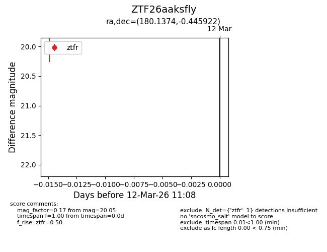
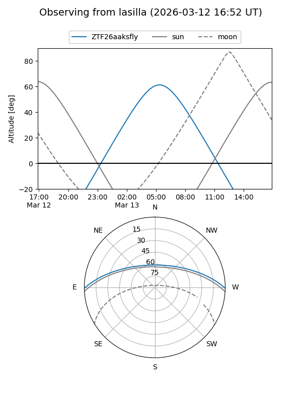
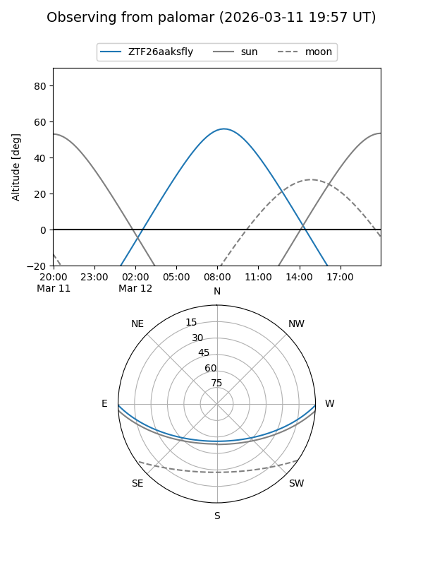

ZTF26aaksfly
Target ZTF26aaksfly at 2026-03-12 11:09
Aliases and brokers:
FINK: link
Lasair: link
ALeRCE: link
alt names
ZTF26aaksfly (ztf,fink_ztf)
Coordinates:
equatorial (ra, dec) = 180.1374,-0.44592
equatorial (HMS+DMS) = 12:00:32.96,-00:26:45.32
galactic (l, b) = (276.9415,+59.83289)
Flags:
Photometry:
last ztfr=20.05
1 ztfr detections
Lightcurve

Visibility


Additional plots